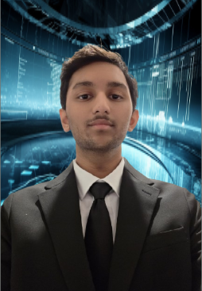
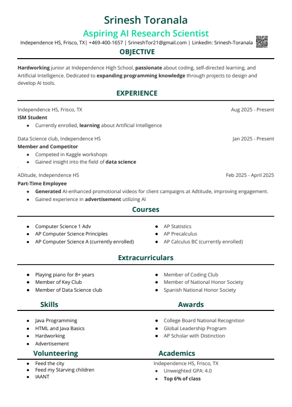
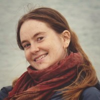

As an Independent Study and Mentorship (ISM) student, I aim to design and develop sustainable AI solutions that benefit various industries while reducing environmental impact. My focus is on Green AI—optimizing artificial intelligence systems to consume less energy through prompt engineering and model efficiency. I'm committed to upholding high standards of professionalism as I expand my network by engaging with and learning from professionals in the AI and sustainability fields.
Explore My Projects
Frisco ISD's Independent Study and Mentorship program is a program for which students must apply, interview, and be recommended during their junior and/or senior year.
Gifted and high achieving students focus their study on a topic or career of their choice. They develop a research portfolio that has a collection of resources including interviews and observations with people who work in their chosen field or topic of study.
Students work on time management, communication, research, goal setting, various soft skills, and presentation skills with mentors at their mentorship, students gain "real world" experience and also to create an advanced product related to their topic.
Students progressively give longer speech presentations and will give a formal presentation of their product and mentorship in May. Students leave the ISM experience knowing more about their chosen profession and whether or not that profession is the life and career path they desire to choose as they prepare to enter college.
For more information about the program, visit the Frisco ISD ISM website.
September 9th, 2025
I have learned so much about professional writing and researching in the past few weeks of ISM. I started this year knowing I wanted a career in AI, but I had no idea what that would look like until the career outlook assignment...
Read MoreExplore my collection of research articles on AI and sustainable technology, including studies on green AI, climate change solutions, and energy-efficient computing.
View ArticlesDetailed analyses of academic papers on green AI, deep learning, and environmental applications. Organized by marking period with key findings and insights.
View AssessmentsInsights from interviews with professionals in computer science, engineering, and AI fields, including researchers from Google, Google DeepMind, and academia.
View Interviews
Sustainable AI Researcher at Lancaster University
Marta Adamska is a Sustainable AI Researcher at Lancaster University in the United Kingdom. She specializes in the intersection of machine learning and sustainability, with a particular focus on Transformer architectures and generative models. Her research examines the energy consumption of Large Language Models (LLMs) and contributes to national-level reporting of ICT carbon footprint in the UK.
Ms. Adamska has a strong technical background in Python, SQL, and data analysis, and she has held research and test engineering roles that reflect her expertise in both academic and applied technology settings. She earned her Bachelor's degree in Computer Science from Lancaster University and continues her academic and research journey there as a postgraduate researcher.
Her work directly aligns with my interest in artificial intelligence and sustainable technology, making her mentorship especially valuable as I explore the environmental impacts of AI systems and responsible innovation in tech.
Original Work Project
An AI-driven application that analyzes and optimizes user prompts to reduce computational load and energy consumption. Built with T5 transformer model, measures energy savings using Zeus library, and includes web interface for accessibility.
Tools: Python, PyTorch, Transformers, Flask, DistilBERT
Learn MoreFinal Product Project
A green orchestration framework designed to make AI more accessible and sustainable. Integrates prompt optimization and energy-aware model selection to reduce environmental footprint while maintaining accuracy.
Status: Currently In Development
Learn MoreThe fastest way to contact me is by email: SrineshTor21@gmail.com